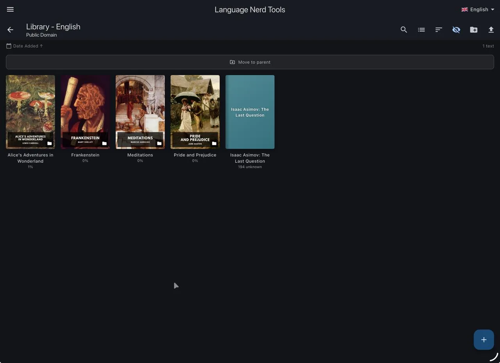

1Library
Keep your texts organised by language in collections and folders, with book covers and progress on each one.
- Import from a web page, plain text or EPUB
- Grid or list view, search, sorting
- See how many unknown words a text has before you start
